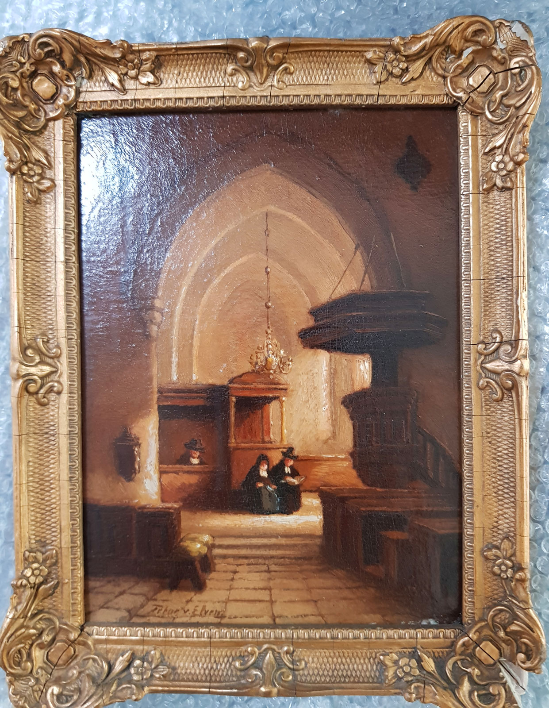
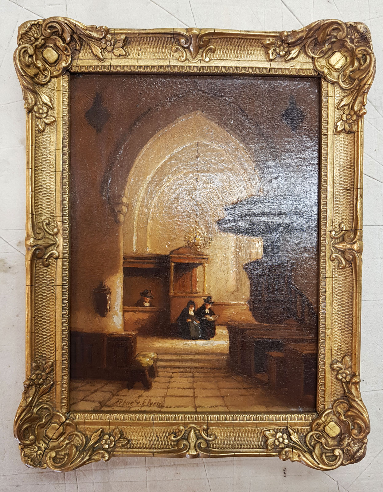
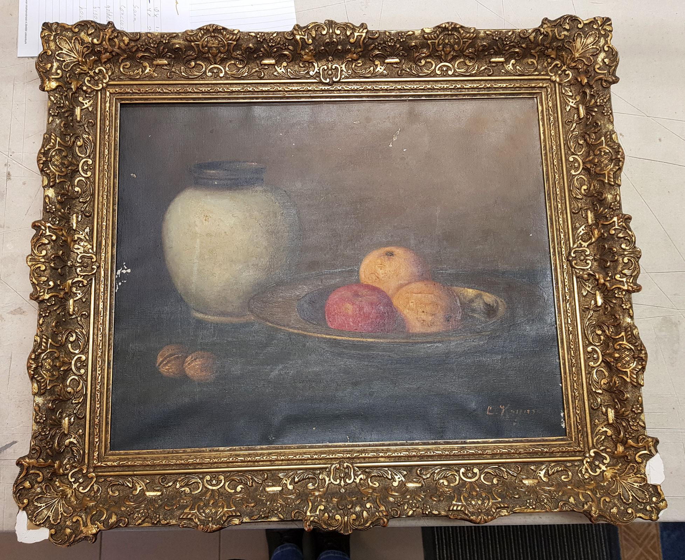
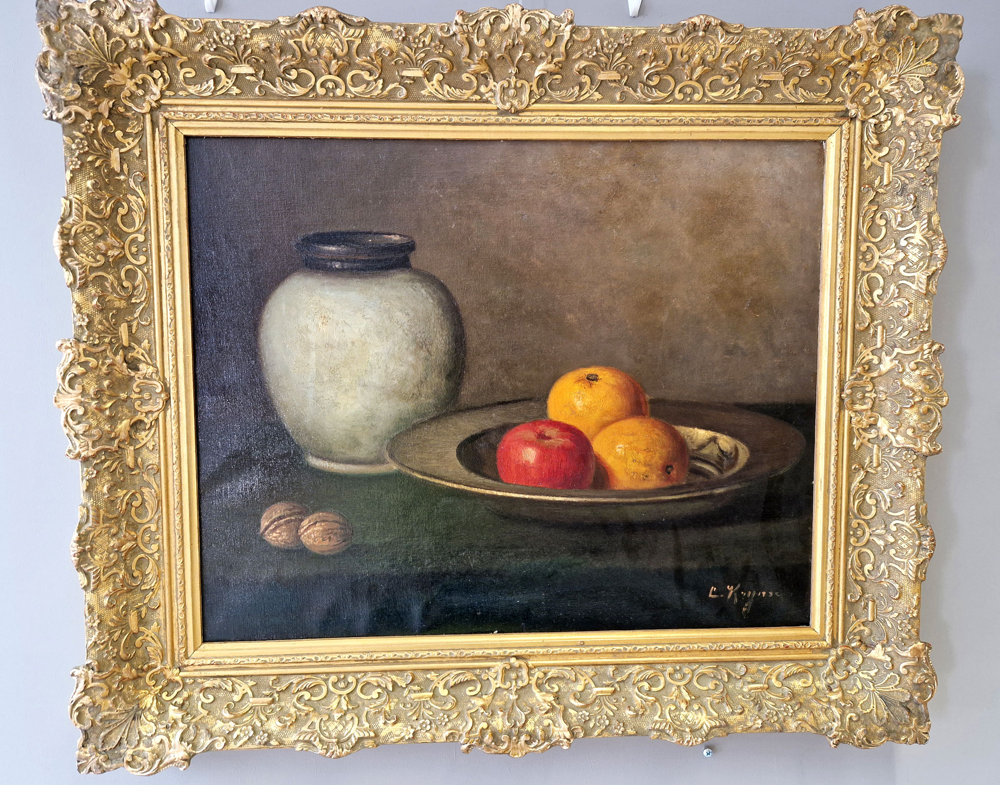

Restauraties waarbij
het verschil in detail zichtbaar wordt
Elke restauratie is anders: van beschadigingen door gebruik en leeftijd tot constructie en afwerking. Het doel is altijd hetzelfde: behouden wat goed is, herstellen wat nodig is.


Zwaar beschadigde lijst
Voor — Duizend keer gevallen zei Mw. Brokke- De Jager! En dat was te zien, het eikenhouten paneel zat los in de lijst en de lijst was zwaar beschadigd.
Na — Het werk is een Tetar van Elven, die na demontage heel voorzichtig is schoongemaakt. De beschadigingen met Pate aangeheeld en in de juiste kleur ingekleurd. Museaal en reversible weer ingelijst en ook deze is weer klaar voor de toekomst.
Wandkandelaar
Voor — Bij Jos Prins met dit geweldige object bezig geweest. Zwaar beschadigd en de tand des tijds niet goed overleefd, dit moet anders kunnen….
Na — Het was een zoektocht naar vorm, kleur en materiaal. Deze wand-kandelaar is weer in ere hersteld en zal een juweel aan de muur zijn voor de eigenaar.


Stilleven
Voor — Het schilderij is vuil, het doek staat niet meer strak, de lijst zijn diverse stukken af.
Na — Prachtig schoon, gerestaureerd en gerepareerde lijst. Daarna grijs ingestoft. Mooi!!!
Samen kijken wat uw lijst
of werk nodig heeft
Twijfelt u of restauratie mogelijk of zinvol is? Neem gerust contact op. In het atelier bespreken we de opties en kijken we wat past bij het werk en uw wensen.